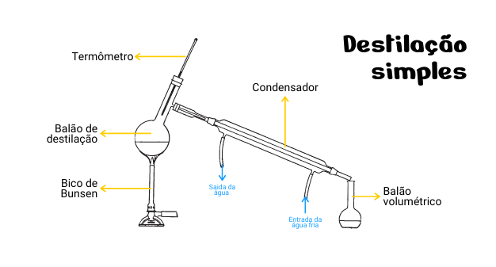
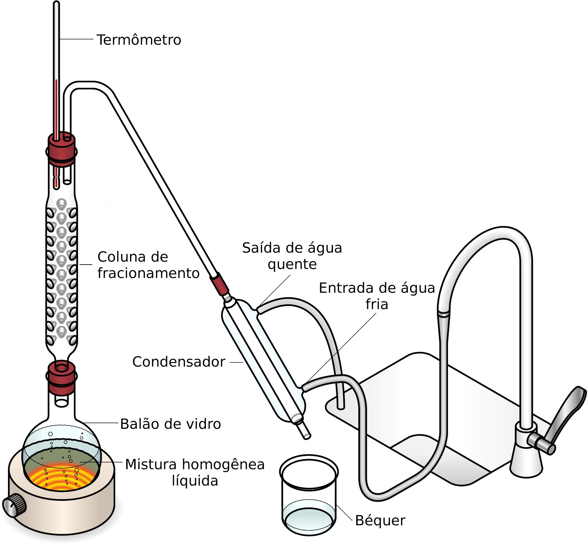
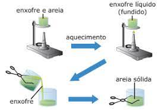
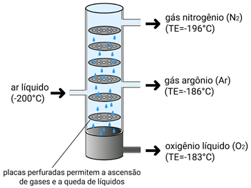

EVAPORAÇÃO
Essa técnica é baseada na diferença de pontos de ebulição entre os componentes da mistura. As misturas homogêneas sólido-líquido, isto é, as soluções químicas verdadeiras, são deixadas em repouso ou aquecidas para que o líquido evapore, permanecendo o sólido que possui o ponto de ebulição muito maior. Essa técnica é usada na obtenção de sal de cozinha a partir da água do mar. Exemplo: evaporação de água em salinas para obtenção de sal de cozinha.
DESTILAÇÃO
A destilação é usada para separar cada um dos componentes de misturas sólido-líquido ou líquido-líquido miscíveis. Existem dois tipos de destilação: a destilação simples e a destilação fracionada. A destilação simples é usada principalmente para misturas sólido-líquido e consiste em aquecera mistura em um balão de fundo redondo acoplado a um condensador. O líquido de menor ponto de ebulição evapora e chega ao condensador., onde retorna ao estado líquido e é coletado em outro recipiente.
 A destilação fracionada é usada para misturas líquido-líquido miscíveis. A única diferença é que, antes do condensador, há uma coluna de fracionamento, em que há uma barreira, pois, esse condensador possui bolinhas ou cacos de vidro ou de porcelana. Assim, somente o líquido que tiver menor ponto de ebulição conseguirá passar pela coluna de fracionamento, enquanto o outro sofrerá condensação e voltará para o balão de destilação FUSÃO FRACIONADA
A fusão fracionada é o método aplicado para separar misturas do tipo sólido-sólido que possuem pontos de fusão diferentes. A mistura é aquecida e um dos sólidos funde-se primeiro. 
LIQUEFAÇÃO FRACIONADA
A liquefação fracionada é usada para separar componentes gasosos através da diminuição da temperatura ou elevação da pressão. Um dos gases torna-se líquido primeiro, passando por posterior destilação fracionada. É uma técnica empregada para separar os componentes do ar 